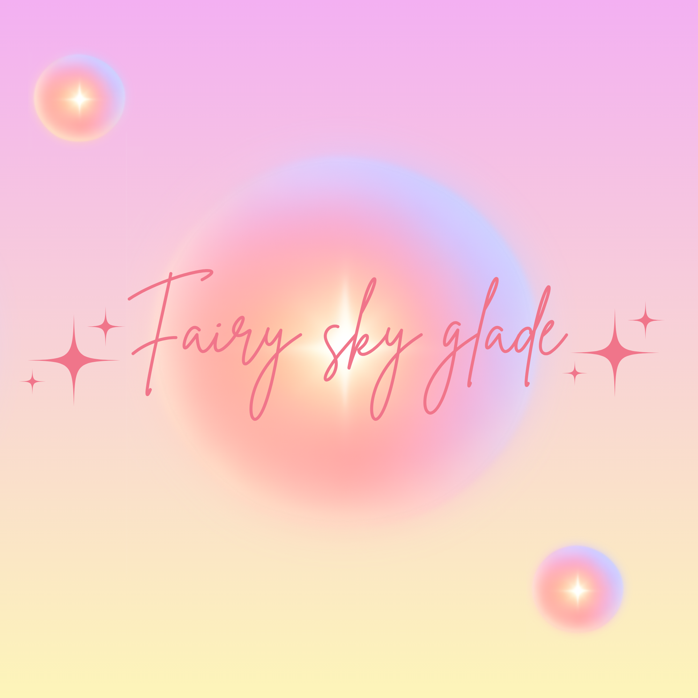

Fairy Sky Glade

Fairy Sky Glade is a 2D platform game where you play as a fairy to collect orbs and power ups to progress to the next level. Each level has been procedurally generated.
The game also uses the Open-Meteo API to change the environment and gameplay depending on real-world weather conditions.
Created with: C, Raylib, Open-Meteo API
Play on Itch.io